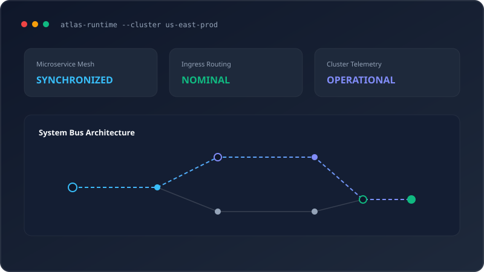

Kernel Telemetry
Granular, real-time observability across distributed nodes with sub-millisecond overhead.
Engineered for sub-millisecond telemetry, deterministic consistency, and low-latency operational throughput across cloud and distributed environments.

Sub-Millisecond Low Latency
High-Throughput Memory Loops
Deterministic State Transitions
Continuous Distributed Observability
Rigorous telemetry, deterministic state transitions, and low-latency throughput at scale.
Granular, real-time observability across distributed nodes with sub-millisecond overhead.
High-efficiency execution pathways engineered for continuous sustained throughput.
Strong transactional invariants guaranteed across heterogeneous network partitions.
Automated contract verification validating system invariants before every deployment.
Non-blocking asynchronous event loops scaled linearly across available computing cores.
Infrastructure-as-code orchestration specifications versioned cleanly in your repository.
A disciplined pipeline from kernel telemetry integration to verified distributed execution.
Embed lightweight eBPF hooks and SDK telemetry probes directly into your microservice runtime.
Stream high-frequency metric events through low-latency memory-mapped ring buffers without garbage-collection pauses.
Enforce invariant validation and real-time anomaly detection across every distributed node partition.
Predictable capacity tiers engineered for high-throughput operational workloads.
For individual systems engineers, staging clusters, and local benchmarking.
For high-throughput production infrastructure with continuous operational load.
For global high-concurrency systems requiring custom SLA boundaries.
Detailed technical answers regarding telemetry latency, runtime invariants, and integration.
The engine utilizes zero-allocation ring buffers and memory-mapped IPC channels, bypassing runtime garbage collection pauses and ensuring deterministic event dispatching.
Yes. Native OpenTelemetry and Prometheus metric exporters are integrated into the core kernel, allowing continuous export of span metrics and trace headers with zero third-party agent overhead.
The cluster employs distributed state invariants that detect partition boundaries instantly, maintaining local causal consistency and reconciling diverging logs upon partition healing.